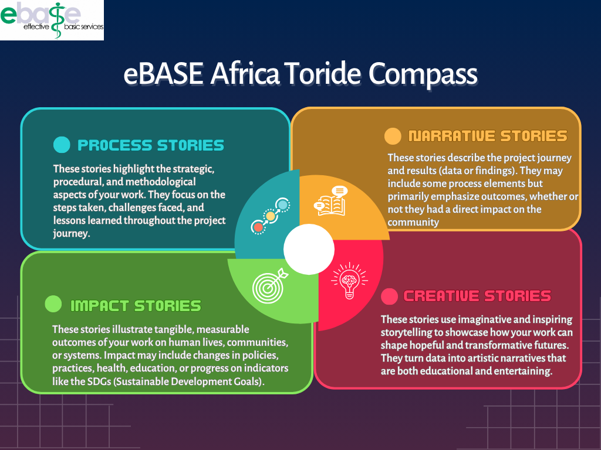

Tori Dey Decision Making Tool
English
Français
Email:
Country:
Organization or Institution:
Who is your primary audience?
No response
Policymakers
Practitioners
People
Researchers
Donors/Funders/Dev agencies
Apart from your primary audience, are there any additional groups or stakeholders you are aiming to reach?
What do you want the story to be about?
No response
The approach and methodology we employed/the way we did our work
The way we worked and the results
The impact of our work on People’s lives
How scientific data can elicit artistic creativity
What message do you want to convey?
No response
Getting evidence on what works is a complex/interesting/challenging process
There is results that you can use for decision-making.
Lives can be impacted if effective interventions are used
Policies need to be more evidence-informed.
Practice needs to be more evidence-informed.
People need to make evidence-based choices
Is there any other message you would like to convey?
Why do you want to tell this story?
No response
Improve knowledge
Change behavior towards uptake of effective intervention
To stimulate investments
To stimulate community engagement
To change workplace culture towards evidence-based practice
Are there other reasons why you want to tell this story?
How do you want to tell this story?
No response
Online (using digital platforms – social media, blogs)
Television
Radio
In-person meetings
On stage performance
Are there other means through which you would like to tell this story?
When do you want to tell this story?
No response
Today
Within a month
Within 6 months
Within 12 months
What specific time do you want to tell this story?
Any events or seasons you are targeting?
No response
Harvest season
Rainy seasons
Winter
Summer
After exams in school
Are there other event(s) you are targeting?
Where do you want to tell this story?
No response
City hall
Village Square
Market place
Parliament building
School
Church
Conference
Where else do you want to tell this story?
Submit
Email :
Pays :
Organisation ou institution :
Quel est votre public principal ?
Aucune réponse
Décideurs politiques
Praticiens
Population
Chercheurs
Bailleurs de fonds/Agences de développement
En dehors de votre public principal, y a-t-il d'autres groupes ou parties prenantes que vous souhaitez atteindre ?
De quoi voulez-vous que l'histoire parle ?
Aucune réponse
L’approche et la méthodologie utilisées/le mode de fonctionnement
La manière dont nous avons travaillé et les résultats obtenus
L’impact de notre travail sur la vie des personnes
Comment les données scientifiques peuvent susciter la créativité artistique
Quel message souhaitez-vous transmettre ?
Aucune réponse
Obtenir des preuves sur ce qui fonctionne est un processus complexe/intéressant/stimulant
Il y a des résultats que vous pouvez utiliser pour la prise de décision
Des vies peuvent être transformées si des interventions efficaces sont mises en œuvre
Les politiques doivent être plus fondées sur des preuves
Les pratiques doivent être plus fondées sur des preuves
Les gens doivent faire des choix basés sur des preuves
Y a-t-il un autre message que vous souhaitez transmettre ?
Pourquoi voulez-vous raconter cette histoire ?
Aucune réponse
Améliorer les connaissances
Changer le comportement en faveur de l’adoption d’interventions efficaces
Stimuler les investissements
Encourager l’engagement communautaire
Changer la culture du lieu de travail vers des pratiques fondées sur les preuves
Y a-t-il d'autres raisons pour lesquelles vous souhaitez raconter cette histoire ?
Comment souhaitez-vous raconter cette histoire ?
Aucune réponse
En ligne (réseaux sociaux, blogs)
Télévision
Radio
Réunions en personne
Performance sur scène
Y a-t-il d'autres moyens par lesquels vous aimeriez raconter cette histoire ?
Quand souhaitez-vous raconter cette histoire ?
Aucune réponse
Aujourd'hui
Dans un mois
Dans 6 mois
Dans 12 mois
À quel moment précis souhaitez-vous raconter cette histoire ?
Y a-t-il des événements ou des saisons que vous ciblez ?
Aucune réponse
Saison des récoltes
Saison des pluies
Hiver
Été
Après les examens scolaires
Y a-t-il d'autres événements que vous ciblez ?
Où souhaitez-vous raconter cette histoire ?
Aucune réponse
Mairie
Place du village
Marché
Bâtiment du parlement
École
Église
Conférence
Où d'autre souhaitez-vous raconter cette histoire ?
Soumettre